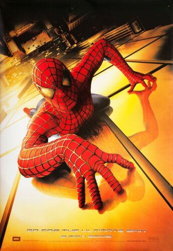
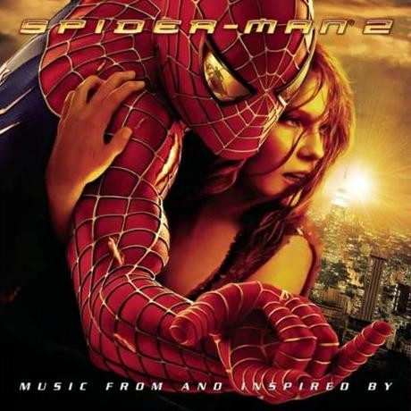
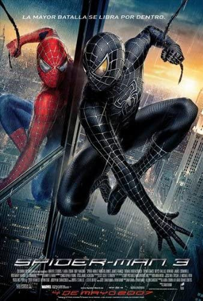
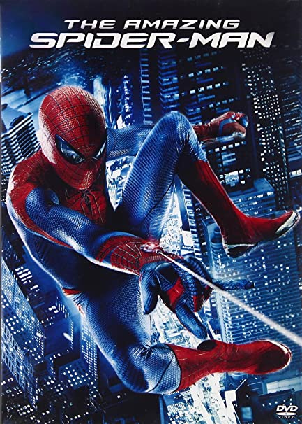
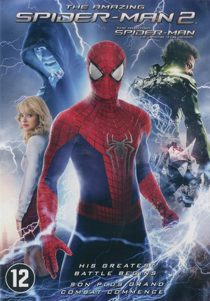

Spider-Man is a 2002 American superhero film based on the Marvel Comics superhero of the same title. Spider-Man premiered at the Mann Village Theater on April 29, 2002, and was released in the United States on May 3. The film received positive reviews from audiences and critics who praised Raimi's direction, the performances, visual effects, action sequences, and musical score. It was the first film to reach $100 million in a single weekend as well as the most successful film based on a comic book at the time. With a box office gross of over $825 million worldwide, it was the third highest-grossing film of 2002, the highest-grossing superhero film and the sixth highest-grossing film overall at the time of its release.
Spider-Man 2is a 2004 American superhero film directed by Sam Raimi and written by Alvin Sargent from a story by Alfred Gough, Miles Millar and Michael Chabon. Based on the fictional Marvel Comics character of the same name, it is the second installment in Raimi's Spider-Man trilogy. Principal photography began in April 2003 in New York City and also took place in Los Angeles. Reshoots took place later that year and concluded in December. Spider-Man 2 was released in both conventional and IMAX theaters on June 30, 2004. It received widespread acclaim from critics, who praised its emotional weight and visual effects, as well as Maguire and Molina's performances and Raimi's direction, and grossed $789 million worldwide
Spider-Man 3 is a 2007 American superhero film based on the Marvel Comics character Spider-Man. It was directed by Sam Raimi from a screenplay by Raimi, his older brother Ivan and Alvin Sargent.Spider-Man 3premiered on April 16, 2007, in Tokyo, and was released in the United States in both conventional and IMAX theaters on May 4, 2007. The film grossed $894.9 million worldwide, making it the highest-grossing film of the trilogy, the third-highest-grossing film of 2007.
The Amazing Spider-Man is a 2012 American superhero film based on the Marvel Comics character Spider-Man and sharing the title of the character's longest-running comic book series of the same title. It is the fourth theatrical Spider-Man film produced by Columbia Pictures and Marvel Entertainment, a reboot of the series following Sam Raimi's 2002–2007 Spider-Man trilogy, and the first of the two The Amazing Spider-Man films.The Amazing Spider-Manpremiered on June 30, 2012, in Tokyo, and was released in the United States on July 3, ten years after the release of Spider-Man (2002), in 2D, 3D, and IMAX 3D formats.The film was a box office success, grossing $758 million worldwide, becoming the seventh highest-grossing film of 2012.
The Amazing Spider-Man 2The Amazing Spider-Man 2 (internationally titled The Amazing Spider-Man 2: Rise of Electro)[6] is a 2014 American superhero film based on the Marvel Comics character Spider-Man. The Amazing Spider-Man 2was released in 2D, 3D, and IMAX 3D on May 2, 2014, in the United States with two international premieres being held between March 31 and April 10 of that year.Although it grossed $709 million worldwide, making it the ninth-highest-grossing film of 2014, it earned $49 million less than its predecessor and is the lowest grossing live-action Spider-Man film to date, becoming a box-office disappointment.
